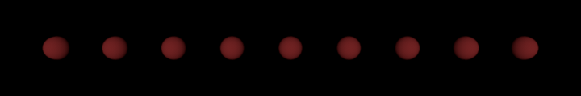
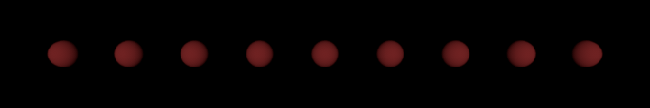

Project Report - Gianluca Moro & Eric Enzler
Motivational Image
For our final image, we wanted to show the beauty of space. To fit the "Out of Place" theme, we wanted to put something random into the scene: For example a car "driving" in space.
Source: pixabay.com
Features: Gianluca Moro
1. Image Textures [5 points]
- Modified Files
src/image_texture.cpp- External libraries
- stb_image
- Theory
-
PBR Book, 10.4 Image Texture
CG Lecture Slides 27.09.2022, Polygonal Meshes & Texture Mapping
Implementation
To load the texture images, I am using the stb_image
library, which is already imported in ext/nanogui. This allows us to load png and jpg images
into 8-bit integer arrays.
To sample a the texture, the eval() method takes the uv coordinates of the desired point as
input. We then convert the uv coordinates to image coordinates as follows:
$$
\begin{align}
x &= u \cdot width \\
y &= (1 - v) \cdot height
\end{align}
$$
Note the $(1 - v)$ because otherwise, the texture would be flipped upside down.
We can then get the RGB values from the image data array as follows:
$$
\begin{align}
index &= (x + y \cdot width) \cdot num\_channels \\
R &= image[index] / 255 \\
G &= image[index+1] / 255 \\
B &= image[index+2] / 255 \\
\end{align}
$$
where $num\_channels$ is the number of channels in the image: 4 for RGBA images, and 3 for RGB images.
The final color is also converted to linear RGB using the nori::Color3f::toLinearRGB()
method.
I also added a scale property, which allows to shrink (scale > 1), and repeat the texture
to fit the surface, or make it bigger (scale < 1).
Furthermore, I added a shift property, which allows to translate the texture. This is for
example useful to rotate the texture on a sphere.
Validation
To validate the implementation, I created identical scenes and rendered them in nori and Mitsuba. The images are almost identical, only the brightness is slightly different because nori and mitsuba use somewhat different values for the same light intensity. However, the textures are applied the identically.
The duck model and texture are from free3d.com, the earth texture from solarsystemscope.com, and the ground texture from 3dtextures.me.
2. Normal Mapping [5 points]
- Modified Files
-
src/normal_map.cpp
src/mesh.cpp
src/sphere.cpp
include/nori/texture.h
include/nori/bsdf.h - External libraries
- stb_image
- Theory
- OpenGL Tutorial 13: Normal Mapping
Normal mapping can be used to fake the lighting of bumps and dents of meshes without adding more polygons.
Implementation
The normal map is an RGB image where each texel encodes the normal at that point: $normal = \left( 2
\cdot
color_{RGB} \right) - 1$.
Loading the image and mapping the $uv$ coordinate to image coordinates is done the same way as for the
Image Textures. The only difference is that now the eval() method returns the normal vector
instead of the color.
To apply the normal mapping, we do the following for each detected intersection:
- Compute tangent and bitangent at intersection point. We want the tangent vector to be in the same direction as the texture coordinates. For this, I followed the steps explained in the OpenGL Normal Mapping tutorial: $$ \begin{align} deltaPos1 &= vertex_1 - vertex_0 \\ deltaPos2 &= vertex_2 - vertex_0 \\ deltaUV1 &= uv_1 - uv_0 \\ deltaUV2 &= uv_2 - uv_0 \\ r &= \frac{1}{deltaUV1_x \cdot deltaUV2_y - detlaUV1_y \cdot deltaUV2_x} \\ tangent &= r \cdot (deltaPos1 \cdot deltaUV2_y - deltaPos2 \cdot deltaUV1_y) \\ bitangent &= r \cdot (deltaPos2 \cdot deltaUV1_x - deltaPos1 \cdot deltaUV2_x) \end{align} $$ where $detlaPos1, deltaPos2$ are polygon edges, and $deltaUV1, deltaUV2$ the edges in the uv space.
- Calculate the new normal at the intersection point using the normal map and the $uv$ coordinates: $new\_normal = \left( 2 \cdot color_{RGB} \right) - 1$
- Use the tangent, bitangent and the mesh normal to compute a tangent space coordinate frame, and then use this frame to convert the new normal to world coordinates.
- Set the converted normal as the mesh shading frame normal.
Validation
To validate the implementation, I created identical scenes and rendered them in nori and Mitsuba. The first scene is an analytical
sphere, and the second scene a mesh plane. Both containing a single pointlight source above the object.
The images are almost identical, only the brightness is again slightly different because nori and mitsuba
use somewhat different values for the same light intensity.
The normal textures are applied identically, and the effect of the normal mapping is clearly visible,
when comparing to only having the texture applied without normal mapping.
The texture and normal maps are from 3dtextures.me
3. Textured Area Emitters [5 points]
Note: As discussed with TA, Xianyao Zhang, I am doing "Textured Area Emitters" instead of "Mip-Mapping" to stay in the 60 points limit.- Modified Files
-
src/arealight.cpp
src/mesh.cpp
src/sphere.cpp
src/path_mis, path_mats, photonmapper, direct_mis, direct_mats, direct_ems.cpp
include/nori/emitter.h
include/nori/shape.h
Implementation
For this feature, I modified the arealight to also accept a texture as the radiance. Now when sampling
the emitter, it will use the uv coordinates to look up the color in the texture and return that
value as the radiance. The lookup is the same as for Image Textures, described above.
To be able to lookup the texture, I added a Point2f uv property to the
EmitterQueryRecord and to the ShapeQueryRecord. The uv property of
the EmitterQueryRecord is updated in the Integrator::Li methods of the different
integrators. This uv value is updated when the ray intersection point is an emitter.
The uv property of the ShapeQueryRecord is updated in the
Shape::sampleSurface method in mesh.cpp and sphere.cpp.
This uv value is updated when we sample a point on the emitter surface.
Validation
To validate the implementation, I created identical scenes and redered them in nori and Mitsuba. Both scenes contain either an
analytical sphere or a mesh, and a ground plane. The sphere resp. mesh is the only emitter in the scene.
The path_mis integrator with 64 samples per pixel was used to render the scene.
The images look very similar: The mean error between the images is only 0.003 for both scenes, calculated
using the tev tool.

4. NL-means Denoising using Pixel Variance Estimates [15 points]
- Modified Files
-
src/render.cpp
src/denoise/denoise.py - External Libraries
-
opencv-python
numpy - Theory
- CG Lecture Slides 25.11.2022, Image-Based Denoising & Denoising with Deep Learning
Implementation
To perform NL means denoising, we need the pixel variance. To estimate the non-uniform pixel variance,
I used the following formula:
$$
\begin{align}
var[p] &= (\text{sample variance}) \cdot \frac{1}{n} \\
&= \left( \left( \frac{\sum_{i=1}^n x_i^2}{n} - \left( \frac{\sum_{i=1}^n x_i}{n} \right)^2 \right)
\cdot \frac{n}{n-1} \right) \cdot \frac{1}{n}
\end{align}
$$
To estimate the variance, I updated the RenderThread::renderScene in render.cpp.
Now when rendering a scene, it will also output a image_variance.exr file, containing the
estimated variances.
I implemented the fast NL-means denoising algorithm given in the
lecture slides in python,
using opencv and numpy. The algorithm is well explained in the lecture slides. For the $d^2$ function,
I used the non-uniform variance variant.
OpenCV is used to read and write the image files, and to apply the boxfilter convolution.
Numpy is used to perform efficient array operations.
Validation
To validate the denoising, I rendered the cbox scene using the path_mis integrator,
with 256 samples per pixel, which produced quite a noisy image. I also rendered the same scene
with 8192 samples per pixel as a baseline to compare the denoised image to.
Rendering and denoising the 256 spp image (with $r=10, f=3, k=0.45$) took in total about 2.2 minutes
(1.9 minutes for rendering and 0.3 minutes for denosing), while the 8192 spp took about 51 minutes to
render. So, we have a speedup of around 23.
The denoised image looks very similar to the high spp version. However, there are some faint patterns
visible, especially on the walls. With some parameter tweaking, those could probably be reduced even more,
but this would also increase the denoising time.
5. Heterogeneous Participating Media [30 points]
- Modified Files
-
include/nori/medium.h, src/homogeneous_medium.cpp, src/heterogeneous_medium.cpp
include/nori/phasefunction.h, src/phasefunction.cpp
src/vol_path.cpp
include/nori/perlinnoise.h
include/nori/scene.h - External Libraries
-
NanoVDB (A lightweight version of OpenVDB)
github.com/daniilsjb/perlin-noise (3D Perlin Noise) - Theory
-
CG Lecture Slides 04.11.2022, Participating Media I
CG Lecture Slides 08.11.2022, Participating Media II
PBR Book, 15.2 Sampling Volume Scattering
PBR Book, 15.3 Volumetric Light Transport
Volume and Participating Media, Digital Image Synthesis, Yung -Yu Chuang
Participating media allows us to render clouds and fog. I implemented both homogeneous and heterogeneous participating media using a volumetric path tracer.
Implementation
This feature was the most complicated to implement for me, and took the most amount of time to finish. For the implementation, I mainly followed the theory covered in the lecture slides and the PBR book.
Phase Function
To sample a new scattering direction, I implemented both the isotropic and Henyey Greenstein phase functions, as defined in the lecture slides. The pdf functions are as follows: $$ \begin{align} f_{p\text{ISO}} (\vec{w}', \vec{w}) &= \frac{1}{4\pi} \\ f_{p\text{HG}} (\theta) &= \frac{1}{4\pi} \frac{1 - g^2}{\left( 1 + g^2 - 2g \text{cos}(\theta) \right)^{3/2}} \\ \text{where: } \; \; \text{cos}(\theta) &= \frac{1}{2g} \left( 1 + g^2 - \left( \frac{1 - g^2}{1 - g + 2g\xi} \right)^2 \right) \end{align} $$
Medium
The medium needs the ability to sample a free path and calculate the transmittance along a ray.
For the homogeneous medium, I first tried the simplified variant with $Tr(t) = e^{-\sigma_t \cdot t}$
(Beer-Lambert law),
but I couldn't get it to work properly since this always resulted in a completely black medium.
Therefore, I am using Delta Tracking for both the homogeneous and heterogeneous medium.
The idea is to start at the beginning of the ray and take a random step along the ray, according to
$t \texttt{ += } -log(1 - \xi) \cdot inv\_max\_density / \sigma_t$.
To sample a free path, we continue Delta Tracking until we either exit the medium,
or until $current\_density / max\_density \gt \xi$, where $\xi$ is a random number between 0 and 1.
The first case means we have no medium interaction, while the second case indicates a medium
interaction, and we return the $albedo$ color.
To calculate the transmittance, we continue Delta Tracking until we exit the medium, while in every
iteration we update $t$ as before and also update the transmittance as:
$tr \texttt{ *= } 1 - max(0, current\_density \cdot inv\_max\_density)$, where the initial value is $tr
= 1$.
Each medium is described by: $$ \begin{align} \text{Absorption coefficient } & \sigma_a \\ \text{Scattering coefficient } & \sigma_s \\ \text{Extinction coefficient } & \sigma_t = \sigma_a + \sigma_s \\ \text{Albedo } & \alpha = \sigma_s / \sigma_t \end{align} $$
All media types use a bounding box, defined by the center and size xml scene
parameters, to define where the medium should be placed.
While the density function for the homogeneous medium is always constant, for the heterogeneous medium
it is spatially varying. For the homogeneous medium, we can specify the density with the
max_density value in the xml scene file.
For the heterogeneous medium, I added support for different density types, which can be specified with
the density_type parameter:
- Exponential: $d(p) = max\_density \cdot exp(-b \cdot h)$, where $h$ is the height in the direction of the up-vector
- Volume Grid: The density at a point is read from a volume grid (.nvdb) file
- Perlin Noise: The density at a point is calculated using a 3D perlin noise function. See Procedural Volumes for more information.
Exponential
The exponential density function slowly decreases the density in the up direction. The parameter
b and the up-direction vector up_dir can be specified in the xml file.
This density function allows us to create nice foggy scenes.
Volume Grid
To read the density values from a volume grid file, I am using
NanoVDB,
which is a header-only library to read NanoVDB files, which are similar to
OpenVDB files.
To get the density of a specific point in our scene, I am first projecting the point inside our medium
bounding box to the unit cube. Then I can use this position to determine the corresponding point
inside the bounding box of the grid defined in the vdb file.
Perlin Noise
This was implemented by Eric as part of the Procedural Volumes feature. For implementation details, please have a look at Eric's section on Procedural Volumes.
Volumetric Path Tracer
To render the participating medium, I implemented a Volumetric Path Tracer vol_path.
I based this integrator on the path_mis integrator implemented as part of the homeworks,
and added the functionality to handle medium interaction.
First, we sample a random medium which the ray intersects. For this medium, we sample the free path,
and if we detect a medium interaction, we sample a random emitter. If the emitter is visible from the
sampled medium point, we calculate the transmittance along the shadowray through all media in the scene
by multiplying each transmittance value together.
We then use the phase function to sample a new direction for the recursive ray. If the new intersection
point is an emitter, we update the $w_{mat}$ value similar to how it's done in the
path_mis integrator.
If we have no medium interaction, we basically do the same as in the path_mis integrator,
while also including the calculated transmittance along the ray.
Below is the pseudocode for the volumetric path tracer:
Li = 0, t = 1
while (true) {
medium = scene.getRandomMedium()
albedo = scene.sampleFreePath()
if (mediumInteraction) {
russianRoulette()
t *= albedo
Vector3f scatterDirection
pdf_mat = medium.phaseFunction().sample(scatterDirection)
randomEmitter = scene.getRandomEmitter()
if (!shadowRayOccluded) {
Color3f Tr = 1
for (med : scene.getAllMedia()) {
Tr *= med.Tr(shadowRay)
}
// update pdf_em and w_em
Li += t * Tr * randomEmitter.sample() * numEmitters * pdf_mat
}
recursiveRay = Ray3f(mediumInteractionPoint, scatterDirection)
// update w_mat
}
else if (!mediumInteraction && !surfaceInteraction) {
break
}
else {
// add contribution from material sampling
// including transmittance
russianRoulette()
// add contribution from emitter sampling
// including transmittance
// update w_em
// update recursiveRay
// update w_mat
}
}Validation
Volumetric Path Tracer
To validate my volumetric path tracer, I rendered identical scenes without any participating media
present, using my vol_path integrator and the path_mis integrator
implemented as part of the homeworks.
As expected, the resulting images look identical.
Homogeneous
To validate the homogeneous medium, I rendered identical scenes using my implementation and
Mitsuba.
The images look very similar. Note that the position of the medium cube is not 100% identical,
because I use a different approach to define the medium position,
and thus conversion caused some misalignment.
$\sigma_a = 2, \sigma_s = 0.5$ and isotropic phase function.
Heterogeneous: Exponential Density
No comparision with mitsuba3 renderer because it does not support Exponential density.
However, the resulting images look correct to me.
$\sigma_a = 2, \sigma_s = 1, b = 5$, with different $up\_dir$.
In the following scene, the medium cube has been scaled up to fill the entire scene.
Together with exponential density, this creates a nice fog effect.
$\sigma_a = 1, \sigma_s = 4, b = 5$
Heterogeneous: Volume Grid Density
Unfortunately, no comparision with mitsuba3 because mitsuba3 does not support OpenVDB
or NanoVDB, but requires .vol files, and I was unable to convert our NanoVDB files to
.obj files.
However, the resulting image looks as expected: The expected shapes are clearly visible.
The vdb files are from the OpenVDB website,
and converted to NanaoVDB files using the converter provided by
NanoVDB.
As you can see, we can also render colored medium by specifying the $\sigma_a, \sigma_s$
accordingly.
Gray: ($\sigma_a = [1, 1, 1], \sigma_s = [4, 4, 4]$),
Red: ($\sigma_a = [1, 1, 1], \sigma_s = [4, 0.5, 0.5]$),
Blue: ($\sigma_a = [1, 1, 1], \sigma_s = [0.5, 0.5, 4]$)
Furthermore, I also implemented the ability to rotate the volume grids.
Features: Eric Enzler
1. Directional Light [5 points]
- Modified Files
-
src/directionallight.cpp
- Theory
-
PBR Book, 12.4 Distant
Lights
Implementation
For this special light source, I used the implementation of the book. Unfortunately, I could not make use of the bounding box of the scene. In the implementation, I am currently using a hardcoded value for the radius. This overestimates the power of the light a bit but still gives good results.
Validation
To validate the implementation, we created identical scenes and rendered them in nori and Mitsuba. Both scenes contain two meshes and a ground plane. The direction of the light source and the color of the light are the same. The two images show no differences with this direction of the light. In other cases, our implementation resultet in a slightly brighter picture because of the overestimation described above.
In the scene below, our implementation results in a brighter image than the one from mitsuba.
2. Motion Blur for cameras [5 points]
- Modified Files
-
src/perspective.cpp
src/render.cpp
src/ttest.cpp
nori/camera.h
Implementation
The implementation of this feature was hard. There is no information about it in the PBRT book and the
blog
posts online did not help me well either.
The basic behind this type of motion blur is obviously that the camera needs to move in some way. At
first,
I tried to do this by hand, meaning that I setup my own transformation matrices and then multiplied them
with the camera's matrix.
This did not work at all and I had to use a simpler approach where I defined the transformation matrix
directly in the xml file. This means that for motionblur we need to specify the point where the camera
will
move to.
As we already have defined the origin of the camera, I programmed some sort of interpolation between the
two
matrices. The camera will move a tiny bit towards the final position depending on the contribution of the
sample. This contribution factor is based
on the value of $m_{progress}$ which is defined in the render.cppfile.
Validation
Validation for this type of blur is purely visually. For the scene, I let the camera move a small fraction to the side. The blur applies instantly and is very intense. In the renderer one can notice the movement of the camera and its effect on the bluriness.
3. Procedural Volume [5 points]
- Modified Files
-
src/heterogeneous_medium.cpp
include/nori/perlinnoise.h
- External Libraries
- github.com/daniilsjb/perlin-noise (3D Perlin Noise)
- Theory
-
CG Lecture Slides 04.11.2022, Participating Media I
CG Lecture Slides 08.11.2022, Participating Media II
PBR Book, 15.2 Sampling Volume Scattering
PBR Book, 15.3 Volumetric Light Transport
Volume and Participating Media, Digital Image Synthesis, Yung -Yu Chuang
Implementation
I implemented this feature together with Gianluca as he is the creator of the Heterogeneous Participating Media. After he explained me the functions and files, it was significantly easier to implement the procedural volume. For the feature, I created a new header file for perlin noise with the help of an existing github repo. To add the noise to the medium, I define a new type of density that is calculated with the 3D perlin noise.
To apply the density, I can choose between a cube and a sphere. More complex shapes are not supported.
Validation
I created Perlin spheres and cubes and varied the frequency and density parameters inside the cbox scene.
4. Environment Map [15 points]
- Modified Files
-
src/environment.cpp
nori/common.h
- Theory
-
PBR Book, 12.6 Infinite Area Lights
PBR Book, 14.2 Sampling Light Sources
Interpolation blog
Lerp for interpolation
Implementation
For the implementation, I followed the approach of the book.
First, as the Environment Map is just an infinite arealight, I cloned the file and began to modify it.
In the constructor, I build the Environment Map using the Bitmap("filename") method. With
this
bitmap,
I directly build a matrix of intensities and use this matrix to calculate the row-PDF, row-CDF as well as
the 2D conditional PDF and CDF.
For the sample() method, I first applied discrete sampling (unlike continuous sampling
which
is used in the book) to find the {i,j}-coordinates.
Then I mapped these coordinates to $\theta$ and $\phi$ to be able to call
sphericalDirection(theta,phi) and set lRec.wi of the EmitterQueryRecord.
With this information I was able to calculate the Jacobian matrix and the final return value.
For the eval() and pdf() methods, I calculate the u and v coordinates
given the EmitterQueryRecord using the approach from the sphere.cpp file. Given the
coordinates, we can access values of the bitmap and the conditional PDF/CDF matrices.
In the eval() method, I first tried to average the neighboring pixels by myself.
Unfortunately, with this approach
I created a blur filter and the resulting images were not pretty to look at. After doing some more
research,
I decided to use bilinear interpolation.
With the help of two blog posts mentioned above in the Theory listing, I managed to implement the
necessary formula with some
minor adjustments for out-of-bounds errors. The resulting image was now less blurry than before, but I was
not satisfied. In an effort to create
an unblurred alternative, I set a new boolean property which lets the user decide
whether he wants to use interpolation or not to find the {u,v}-values.
If the flag is not set, I will simply do the following:
if(!m_interpolate){
int u = int(round(x));
int v = int(round(y));
return m_envBitMap(u,v);
}
Validation
To validate the implementation, we created identical scenes and rendered them in nori and Mitsuba. Both scenes contain a dielectric sphere in the middle and an environment map. The images look very similar but the most noticable difference is the blur in my own implementation. There are also some small differences in spots that are very intense in terms of light.
The first images uses an Environment map with a 2K-Resolution. The rendering is relatively fast: It takes about 20 seconds. The second image uses an Environment map with a 4K-Resolution. The rendering is slow: It takes about 2 minutes to complete.

5. Advanced Camera [15 points]
- Modified Files
-
src/perspective.cpp
- Theory
-
PBR Book, 6.2 Projective Camera Models
Concentric disk sampling - blog
Distortion
Implementation
Depth of Field
For DoF I followed the implementation of the PBRT book which explains the process very clearly. Thanks to the book I managed to implement this feature very quick.
Lens Distortion
For the distortion, I did not find any good information in the book. After doing some research on the topic and seeing the same formula over and over again, I implemented a simple but effective way to distort the lens. For this, I need two warping parameters $K_1$ and $K_2$ and also the norm of the x and y coordinates on the camera's near plane. Then, I simply calculate the distortion value with the following function:
float distortionFunction(float r) const{
if(r == 0)return 1.f;
auto fin = (1.0f + K1 * powf(r,2) + K2*powf(r,4));
return fin;
}
and multiply the x and y coordinates on the near plane with this value.
Bokeh
Bokeh was hard to implement as there were simply no resources available in the book. As always I did
some
research and found that bokeh is a special type of blur occuring usually with depth of field.
To implement the feature, I coupled it with DoF: Meaning that bokeh only works in settings where DoF is
enabled. For the effect, I modified the warping method that is used in DoF. I calculate an offset for each
point Point2f offset = 2.f * sample - Vector2f(1, 1);
and then apply concentric disk sampling directly. This allows for bokeh in its circular form - which in my
opinion is the most beautiful and relevant one.
Validation
For DoF, since I followed the implementation of the book, I wanted to confirm my work with the Mitsuba renderer. For this I created a simple scene with a plane and a skull. I switched between a short and a long focal distance to get an image where the skull is in focus and one where it is not. The effect seems to work but my pictures are less bright, which is due to the light source intensity.
The following scenes were created without a sibling in Mitsuba. The scene consists of multiple teapots. In the first image, the focal distance is kept short: The focus point is more towards the left side of the picture, where the teapots are close. The first image is crossed with an image of the same focal distance but a different lens radius. The second image has a larger focal length: Its focus point shifts more to the right of the picture.
Bokeh Images were rendered using a distant light source that shines on multiple spheres. I fixed the focal length and increased the lens radius three times. The bokeh effect is only noticable for very blurry images - which is conformant with the real bokeh effect in photography. The validation of this feature is purely visual.
 

For the camera distortion, I simply rendered an environment map and added the distortion effect. The validation of this feature is purely visual. However, the tiled floor of the environment map makes it easy to verify that the feature does what it should.

Thanks to the new camera features, we are now able to create images like the one below. It displays a dielectric rocket on a stand with minor depth of field effect and a barrel distortion.
6. Disney BSDF [15 points]
- Modified Files
-
src/disney.cpp
src/warp.cpp
src/warptest.cpp
- Theory
-
Disney Paper
Blog post on Disney BSDF
Implementation
Out of the 10 possible parameters, I implemented specular, metallic, roughness, sheen and clearcoat. For most of them, I used the original disney paper as reference. Since sheen is only mentioned briefly in the disney paper, I additionaly took inspiration from a blog post on the Disney BSDF. For specular and clearcoat, I implemented new warping functions called GTR1 and GTR2 (Generalized-Trowbridge-Reit distributions). I also added more than the 5 required parameters to my model because I wanted to see the effects of them in action.
For clearcoat, I was not happy with the implementation that the Disney paper proposed. Officially, the
term
looks like this: (m_clearcoat * Gr * Fr * Dr) * 0.25 where the intensity is
only $0.25$ and the effect of clearcoat is not visible without sliding the exposure up to 100%. To counter
this, I simply
added a new variable (m_clearcoat * Gr * Fr * Dr) * m_clearcoatIntensity . This variable is
currently hardcoded at $1.5$ and gives (in my opinion) a much better and clearer clearcoat effect.
For sheen, as mentioned above, I did not find a lot of useful information in the disney paper. The original idea for it is given only in the appendix of the paper and after using said idea, I was not happy with the result. I then did some research online and found a blog post that proposed a slightly different formula for sheen. I implemented it but sadly was not able to reconstruct the effect so clearly as it is depicted on the disney reference image.
Validation
For the Validation of the new warping functions, I changed the warptest file accordingly and ran the tests. Both warping functions succeeded.
For the actual disney parameters, I setup a scene with five teapots and increased the parameter strength from left to right. The other parameters were held constant. For clearcoat, as mentioned above, I changed the factor such that the effect is better visible.
The effect of sheen is not visible very clearly but one can see some more of the white light on the rightmost teapot, especially at the top.
For validation, I have included an image from the reference paper of disney where all the parameters are shown.
Final Image
Our final image was rendered using the volumetric path tracer integrator with 256 samples per pixel. We also denoised the image using the method described above.